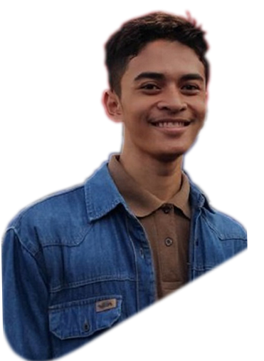
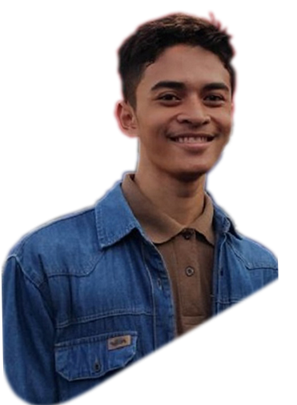

Tentangku
Nama lengkap saya Muchamad Harib Bahtiar, biasa dipanggil Harib. Lahir di Kudus tanggal 15 Mei tahun 1998. Mempunya 1 kakak perempuan dan 1 adik laki-laki. Aku lahir dari keluarga sederhana. Ayahku seorang pegawai swasta. Sedangkan Ibuku adalah seorang ibu rumah tangga.
Alhamdulillah pendidikan aku tempuh dengan lancar. Di tahun 2010 lulus SD Negeri 1 Rendeng, selanjutnya 2013 lulus SMP Negeri 5 Kudus, dan meneruskan di SMK Negeri 7 STM Pembangunan Semarang selesai di tahun 2017. Dan sekarang dijenjang mahasiswa pada salah satu universitas terbaik di Jawa Tengah Universitas Dian Nuswantoro Semarang.